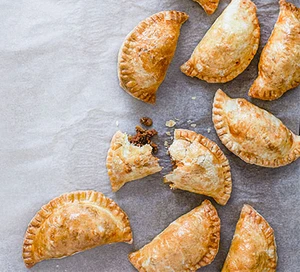

Empanadas

Description
The staple Argentinian food. A great recipe that is the real deal. Try them!
Ingredients
Pastry
- 375g plain flour
- 220g chilled butter, chopped
- 2 eggs, beaten
Filling
- 100g cooking chorizo sausage
- 300g beef mince
- 1 onion, chopped
- ½ small pack coriander, finely chopped
- ½ small pack parsley, finely chopped
- 2 tsp smoked paprika
- 2 tsp ground cumin
- 1 tsp chilli flakes
- 2 tbsp tomato purée
Steps
- Tip the flour into a bowl with 1 tsp salt and add the butter. Rub the butter and flour with your fingertips until crumbly. Add the eggs and 100ml cold water, bring together to a dough then turn out onto a floured surface and begin to knead until soft and smooth. Cover with cling film and put in the fridge to rest for 20 mins.
- Remove the chorizo from its casing and add to a mixing bowl with the mince, onion, coriander, parsley, paprika, cumin and chilli flakes. Mix everything together, then cook in a frying pan over a medium heat for 2 mins. Add the tomato purée and cook for a further 7-10 mins until everything is cooked through. Remove from the heat and allow to cool.
- Heat the oven to 180C/160C fan/gas 4. Divide the dough into four portions and roll out each one into a thin sheet. Use a 10cm biscuit cutter to cut out discs. Place 1 tsp of filling in the centre of each disc, wet the edges, pinch both sides up and fold in half to seal. Use a fork to crimp the edges.
- Arrange on a lined baking tray, brush with beaten egg and bake for 20 mins. When the empanadas are ready, remove from the oven and cool for 5 mins before serving.
Source